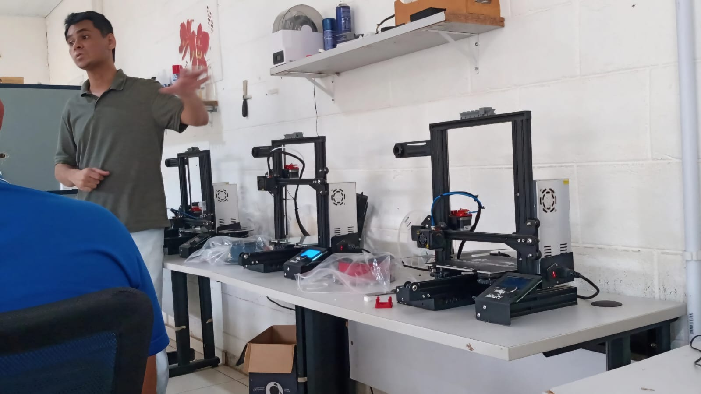
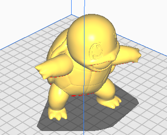
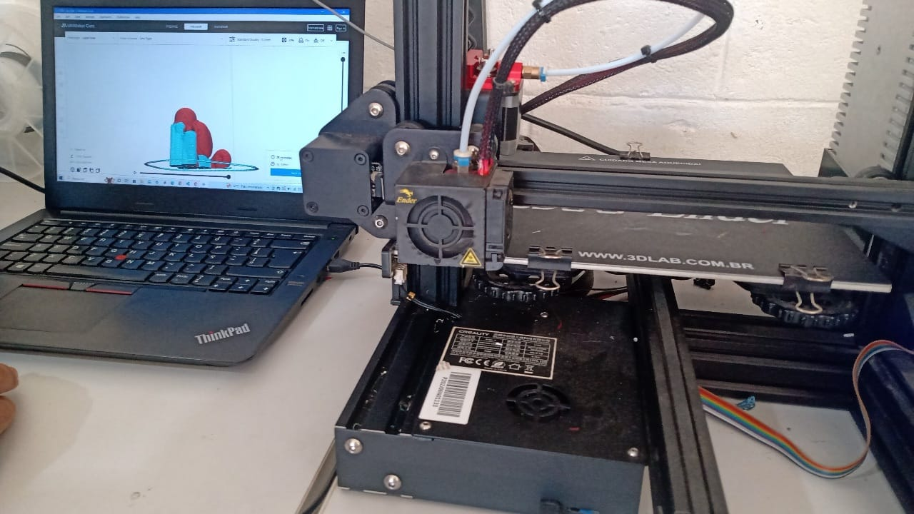

Chapter 3 Conhecendo uma impressora 3D
3.1 Teoria

As impressoras 3d são máquinas usadas em processo de manufatura aditiva, ou seja, elas são dispositivos que permitem a criação de objetos tridimencionais a partir de modelos digitais através da adição de material em camada por camada. Na UFPA, sua utilização apresenta diversas vantagens como a: redução de custos de fabricação de peças que na maioria das vezes são caros ou difíceis de obter por fornecedores externos; o desenvolvimento de habilidades por parte dos discentes e docentes em relação a design de peças e manufatura aditiva além de auxiliar na realização de pesquisas, uma vez que, permite a criação de componentes personalizados.
A fabricação de uma peça em 3D começa pelo carregamento do design da peça para o programa UltMaker Cura, que é um software também conhecido como fatiador que converte modelos 3D em coordenadas específica que são enviadas para os motores de passo da impressora, de modo a criar objetos camada por camada com precisão e detalhamento. As instruções são salvas no software como um arquivo .gcode que posteriormente é carregado para um cartão de memória e inserido na máquina.
A máquina dispões de quatro motores de passo sendo um para o movimento da extrusora no eixo x, um para o movimento no eixo y, um motor de passo que faz o movimento da extrusora no eixo z e mais um para empurrar o filamento que pode ser ele de garrafa pet, PLA entre outros. Antes de iniciar o processo de impressão inicialmente é realizado a verificação e nivelamento da plataforma de impressão e posteriormente a seleção do bico que será utilizado para a fabricação da peça, feito isto, ao selecionar o arquivo carregado a plataforma de impressão é aquecida até uma certa temperatura e depois o mesmo processo ocorre com o Hotend, estando as duas peças na temperatura indicada o processo de impressão começa.
3.2 Prática
Para se ter uma experiência real do processo de impressão em 3D, escolhi o desning de uma peça e realizei as devidas configurações no UltiMaker Cura em relação ao tamanho, preenchimento, suporte, dentre outros. Neste caso o design escolhido foi a do personagem squirtle do desenho Pokemon, ao levalo para o software de fatiamento o mesmo se apresentou como é mostrado na Figura(5) onde o seu modelo previo após a impressão é mostrado na Figura (6).
Ao carregar o arquivo .gcode para o cartão, inseri-lo na máquina e fazer a verificação e nivelamento da plataforma de impressão iniciei o preocesso de impressão 3d como observa-se na Figura (7), mas sempre me atentando a possíveis erros como principalmente no inicio do processo como o caso de problemas de adesão da primeira camada a plataforma. Após 30 min de impressão obteve-se como resultado a peça mostrada na Figura(8).
A partir da experiência prática foi possível observar que a impressão de peças 3D apresenta diversas vantagens no laboratório, mas para evitar desperdicío de material e tempo de impressão saber realizar as devidas configurações no UltiMaker Cura e estar atento a possíveis falhas de impressão é crucial para se obter uma peça precisa e de boa qualidade.